Descripción de la interfaz de usuario e instrucciones de uso de la edición en CD-ROM del DCR.
La interfaz de esta obra se compone de:
A- una barra superior de menús
B- una pequeña barra de iconos
C- la ventana de navegación, que a su vez se divide en cuatro ventanas ( Índice, Búsqueda, Abreviaturas y Autores citados), y
D- la ventana de presentación de texto.
E- conexión a la web de la editorial Herder S.A. y correo electrónico
(Advertencia. Es posible que los colores de las imágenes que aparecen en este documento de instrucciones no coincidan plenamente con los que pueda observar en su ordenador, ya que el color de dichas ventanas depende de la configuración del sistema operativo Windows que tenga cada usuario)
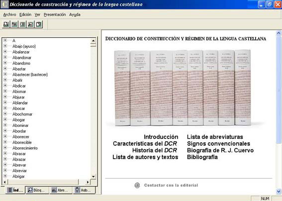
La barra de menús incluye las opciones: Archivo, Edición, Ver, Presentación y Ayuda. La letra subrayada en este primer nivel de la barra de menús indica que la opción correspondiente se activa no solamente con un "clic" de ratón, sino también con la combinación de teclas Alt + tecla subrayada. Es decir, que para abrir el menú Archivo, por ejemplo, basta con pulsar la combinación Alt + A. En cambio, si dentro de uno de los menús desplegables aparecen más opciones con una letra subrayada, estas opciones se activan pulsando la tecla correspondiente. Por ejemplo, el menú Ver (que como hemos visto se activa tanto a través del ratón como de la combinación de teclas Alt + V) se despliega dando lugar a seis submenús, uno de los cuales, el submenú Tamaño del texto se despliega a su vez en otras cinco opciones. Para activar el submenú basta con presionar sobre la tecla de la letra subrayada (en este caso la T). De manera semejante el menú Edición se despliega dando lugar a dos submenús: Copiar y Buscar en documento. En este caso, una vez desplegado el submenú, se pueden activar dichas funciones presionando directamente sobre las teclas C y B respectivamente. No obstante, estas dos funciones también se pueden activar en cualquier momento mediante la combinación de teclas Ctrl.+ C y Ctrl. + B respectivamente.
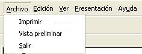
Despliega tres opciones: Imprimir, Vista preliminar y Salir. La función de vista preliminar, que es una función relacionada con la impresión del documento, permite ver una presentación previa de la página que se quiere imprimir.
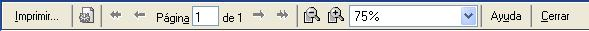
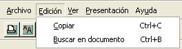
Despliega las dos opciones que ya se han mencionado anteriormente: Copiar y Buscar en documento. La función de copia es la función estándar de Windows, y se activa a partir de este menú o a partir de la barra de iconos. Esta acción copia al "portapapeles" de Windows el texto que previamente se haya seleccionado. A partir de este momento dicho texto puede ser pegado en cualquier programa procesador de textos. Si se quiere seleccionar el contenido de toda la entrada se puede usar el botón derecho del ratón y ejecutar la opción "Seleccionar todo".
La función de Buscar en documento (Ctrl. + B) permite efectuar búsquedas sencillas de palabras o cadenas de texto solamente dentro de la entrada activa, a diferencia de la opción de búsqueda compleja que permite toda clase de combinaciones booleanas, que trabaja sobre el conjunto de todo el texto del DCR, y que se explica más adelante en la descripción de la ventana de búsqueda. La combinación de ambos sistemas de búsqueda ofrece una notable potencia para la localización de términos.
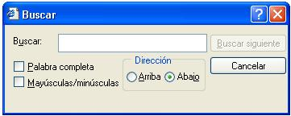
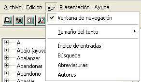
Despliega las seis opciones siguientes:
Ventana de navegación. Por defecto esta opción está activada y permite ver u ocultar la ventana de la izquierda. En el caso de que se oculte la pantalla de navegación el texto de la ventana principal se redimensiona automáticamente favoreciendo la lectura.
Tamaño del texto. Tal como indica su nombre, esta opción permite cambiar el tamaño de las fuentes del texto, adecuándolas a las necesidades del usuario y de la resolución de su pantalla. Por defecto está activado el tamaño de texto mediano.
Los siguientes cuatro submenús permiten alternar entre las diferentes opciones de la ventana de navegación, y equivalen a las "pestañas" situadas en la parte inferior de dichas ventanas que se explican en el apartado C de estas instrucciones.
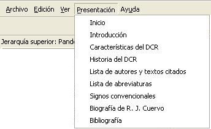
Despliega nueve opciones que muestran los diversos textos explicativos de la historia y las características del DCR, los listados de abreviaturas y signos convencionales, la biografía de R. J. Cuervo y los diversos textos de presentación de la obra redactados por el Instituto Caro y Cuervo, editados solamente en esta obra en CD-ROM, así como la Introducción original que aparece también en la edición impresa. Desde la opción de Inicio se accede también a la página de "Créditos de la obra"
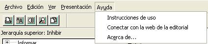
Se compone de tres submenús:
Instrucciones de uso, que abre en pantalla estas mismas instrucciones que está leyendo.
Conectar con la web de la editorial, que permite la conexión a través de Internet con una página específica del DCR dentro de la web de la Empresa Editorial Herder, editora de esta obra en formato CD-ROM. En dicha página de ofrecerán informaciones relacionadas con la edición en CD-ROM del DCR. A su vez, desde esta página se puede acceder a la página principal de la web del Instituto Caro y Cuervo.
Acerca de..., que despliega un pequeño cuadro con la información del número de edición o versión de la obra en CD-ROM, y los créditos de la obra en la edición electrónica.
La pequeña barra de iconos se compone de los iconos siguientes:
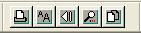
Icono de imprimir. (Equivale a la función del menú Archivo > Imprimir)
Icono de tamaño de texto. (Equivale a la función Ver > Tamaño del texto)
Icono de vuelta atrás. Accionando este icono se vuelve a la pantalla de contenido consultada con anterioridad. (Equivale a la función clásica del botón de vuelta atrás de los navegadores de Internet, y a la acción de la tecla de retroceso de los teclados estándar). Otra opción es usar el botón derecho del ratón y ejecutar la orden de ir atrás (o hacia adelante).
Icono de búsqueda dentro del documento activo. (Equivale a la función Edición > Buscar en documento, o a la combinación de teclas Ctrl. + B).
Icono de copia. (Equivale la función Edición > Copiar, o a la combinación de teclas Ctrl.+ C).
Esta barra se puede arrastrar (mediante el ratón) a cualquier parte de la pantalla, e incluso puede convertirse en una pequeña ventana autónoma. Por defecto aparece en la esquina superior izquierda, justo debajo de la barra de menús.
La ventana de navegación (que se oculta o se muestra mediante la opción prevista en el menú Ver y que aparece activada por defecto en el lado izquierdo de la pantalla) está subdividida en cuatro ventanas:
Estas diversas opciones se activan y se cambian mediante unas "pestañas" situadas en la parte inferior de la ventana.
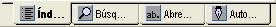
Por defecto aparece activada la ventana del Índice
|
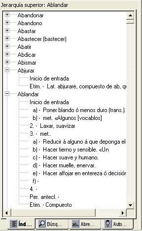 |
El listado completo de las entradas del DCR se muestra ordenado alfabéticamente en esta ventana, que es como un índice convencional, pero en el que las entradas se despliegan para mostrar la estructura general de las distintas acepciones del término consultado tal como aparece en el DCR, así como una breve descripción de cada una de dichas acepciones. En algunos casos la estructura de la entrada puede ser muy larga y muy compleja, organizándose en múltiples niveles. |
Para "navegar" por los contenidos de esta ventana puede ser útil usar las teclas "más" (+) y "menos" (-) que despliegan o repliegan respectivamente la estructura de las entradas. Al seleccionar una de las entradas aparece en la parte superior de la ventana una indicación de la entrada que se está consultando.
Además, si se comienza a escribir un término en esta ventana (y en cualquiera de las ventanas de "navegación") el cursor se desplaza hacia la primera palabra que comience con el texto escrito. Por ejemplo, si tenemos el cursor encima del término "Alcanzar" pero queremos información del término "Perdonar" bastará que escribamos "Per" para que aparezca la lista de todas las entradas del DCR que empiezan por esta combinación de letras. Ahora bien, si comenzamos a teclear "D" el cursor se sitúa inmediatamente en la entrada "Daca" que es la primera entrada que empieza por "D", pero si seguimos escribiendo para ir, por ejemplo, a "Deferencia", al escribir la "e" el programa va a la entrada "De", con lo cual, si seguimos escribiendo la "f" saltará a la primera entrada que comience por esta letra, ya que el programa habrá interpretado que se trata de otra búsqueda. En este caso, una vez situados ya en "De", seleccionamos esta entrada (sin activarla) y podemos seguir escribiendo la palabra completa.
|
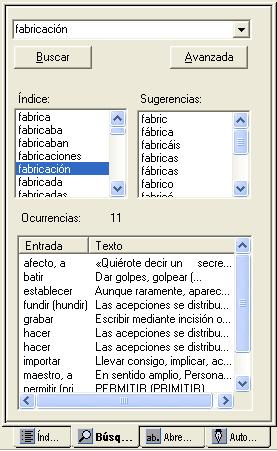 |
Esta potente opción permite formas complejas de búsqueda sobre todo el texto del DCR utilizando operadores booleanos. Así, se puede buscar un solo término escribiéndolo en la casilla de la función de búsqueda, o varios términos unidos entre sí mediante operadores como: Y, O, No y sus diversas combinaciones, o búsqueda literal de cadenas de texto escribiéndolo entre comillas. |
Por defecto el operador activado es la conjunción (Y), es decir que la búsqueda de un término como "fabricación" da 11 resultados, la búsqueda de "fabricación moneda" (que equivale a escribir fabricación Y moneda) produce 2 resultados, la búsqueda de "fabricación NO moneda" ofrece 9 resultados (es decir, los 11 iniciales menos los dos casos en que aparecen cercanos los dos términos).
Pueden hacerse diversas combinaciones con los operadores para acotar las búsquedas.
Para buscar un término debemos escribirlo en la casilla superior de esta ventana. El término ha de tener un mínimo de tres letras, de manera que se excluyen de la búsqueda términos como "de" o "si", etc. Además, algunas otras palabras también se excluyen de la búsqueda. En el caso de que se efectúe una búsqueda literal (entre comillas) que contenga alguna de las palabras excluidas de la búsqueda aparece un aviso como el siguiente:
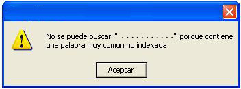
A medida que se escribe la palabra que se desea buscar van apareciendo en la casilla o caja denominada "Índice" un listado de las palabras que empiezan por las letras que se van escribiendo en la pantalla. Esta lista ofrece todas las palabras que aparecen en el DCR excepto las de la lista de palabras excluidas.
La función de búsqueda incorpora un sistema básico de reconocimiento de algunas semejanzas fonéticas, creado expresamente para esta obra, y en algunos casos de sinónimos. De manera que la búsqueda permita sugerir términos citados en la obra que mantienen una cierta relación con el término buscado y que quizás no serían tenidos en cuenta por el usuario. Así, la palabra "hicieron" nos sugiere la posibilidad de buscar "fyçieron", "fiçieron", "ficieron", etc. Estos términos aparecen en el casillero denominado "Sugerencias". Otros ejemplos: la búsqueda de una palabra como "abajo" nos sugiere que tengamos en cuenta términos como "ayuso" (sinónimo) o como "abajó", pero también, "abeja". La búsqueda de "hacer" también nos sugiere "facer", o la búsqueda de "abastecer" nos sugiere términos como "bastecer" o "basteçer". En algunas ocasiones el algoritmo de sugerencias de términos puede ofrecer resultados más chocantes. Por ejemplo, si escribimos "deseo" se nos ofrecen como opciones a considerar términos como "desas", "desee", "dessa", "desseos", etc., pero también nos sugiere "doce", "teseo" o "tasas".
El botón de búsqueda "avanzada" abre una pequeña ventana que permite controlar algunos aspectos de la búsqueda:
· Distinguir entre mayúsculas y minúsculas.
· Buscar solamente en los ejemplos o citas de los autores. Esta opción permite restringir las búsquedas a los textos de los ejemplos (solamente dentro del texto en color azul marino) prescindiendo de las posibles ocurrencias dentro de las explicaciones del DCR.
· Incluir solamente una vez el nombre de la entrada en los resultados. Esta opción está pensada para evitar un exceso de información que puede dificultar la búsqueda. Por ejemplo, si se busca "caballero" este término, que aparece 2.389 veces en el DCR, aparecerá más de una docena de veces dentro de la entrada "A". Quizás sea preferible en algunas ocasiones limitar la información y seguir buscando dentro de la entrada que se consulta mediante la opción de Buscar en documento que aparece en el menú Edición (y que equivale a la acción de Ctrl.+ B)
· Finalmente, la "búsqueda avanzada" también permite determinar la distancia máxima entre palabras buscadas. Por defecto está ajustada a 20 palabras.
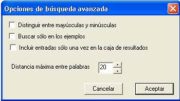
Nota.
Se excluyen de la búsqueda general los textos de la presentación y de este menú de ayuda. No obstante, si desea buscar algún término, por ejemplo en la introducción general, o en la presentación de las características y estructura del DCR, es preciso abrir dichas páginas a partir del menú Presentación y realizar la búsqueda de palabras a través de la opción Buscar en documento (Ctrl.+B).
|
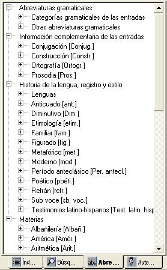 |
Esta ventana permite acceder a la información asociada a todas las abreviaturas que contiene el DCR. Dichas abreviaturas se estructuran en cuatro grandes bloques: 1- Abreviaturas gramaticales, que se ofrecen a través de dos bloques subordinados: "Categorías gramaticales de las entradas" y "Otras abreviaturas gramaticales" 2- Información complementaria de las entradas, que se despliega a través de cuatro bloques de información subordinados. 3- Historia de la lengua, registro y estilo, que ofrece las diversas abreviaturas relacionadas con estos temas a través de múltiples abreviaturas de lenguas y 12 abreviaturas más. 4- Materias, que agrupa abreviaturas de 37 materias distintas, desde albañilería hasta teología. |
El bloque de las abreviaturas correspondientes a las Categorías gramaticales de las entradas ofrece el listado de las diversas entradas del DCR a partir de sus categorías gramaticales, es decir, agrupa los verbos, los sustantivos, los adjetivos, adverbios, conjunciones, etc., de las entradas que se tratan en la obra. En realidad equivale a ordenar las entradas en función de sus categorías gramaticales. Aquellas entradas que pueden agruparse bajo diversas categorías gramaticales o cuya categoría no se especifica en el DCR, aparecen bajo la clasificación de "Sin información de categoría gramatical".
El resto de abreviaturas, organizadas tal como se ha expuesto anteriormente, ofrece la posibilidad de acceder a la parte concreta de la entrada correspondiente a la abreviatura que se quiera consultar.
Así, mientras que el bloque que agrupa las Categorías gramaticales de las entradas ofrece la lista de entradas con dichas categoría, las otras secciones nos ofrecen información de las abreviaturas en cualquier parte del texto. Por ejemplo, en el DCR se consideran 16 preposiciones, que encontramos listadas en el apartado de categorías de las entradas. Otras preposiciones, como "bajo", por ejemplo, se localizan en el apartado de Otras abreviaturas gramaticales, ya que además de preposición puede ser adjetivo, sustantivo y adverbio. Ahora bien, la abreviatura de preposición aparece 4.631 veces en más de 300 entradas, que se pueden consultar a través del bloque de Otras abreviaturas gramaticales. [Es decir, para seguir con este ejemplo, si buscamos las preposiciones en el listado de Categorías gramaticales de las entradas, hallaremos las 16 entradas del DCR que son consideradas directamente preposiciones; si usamos la ventana de búsqueda y escribimos la abreviatura prep. en la casilla de búsqueda, nos aparecerán las 4.631 ocurrencias de esta abreviatura, que en las lista de Otras abreviaturas gramaticales, nos ofrece las más de 300 entradas donde aparece la abreviatura. A su vez, mediante la opción de Buscar en documento (Ctrl.+B), hallaremos las diversas ocurrencias de esta abreviatura dentro de cada una de las entradas en las que aparece].
A partir del menú Presentación se puede consultar la lista de las diversas abreviaturas del DCR en CD-ROM.
|
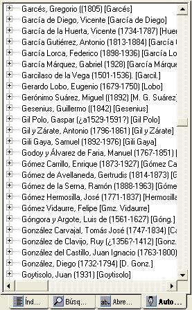 |
En esta ventana se muestran los autores citados en el DCR según la lista de los diversos autores y textos citados. Los diversos autores aparecen ordenados alfabéticamente junto con una breve información cronológica y la abreviatura que los identifica en el seno del DCR. Al abrir la información asociada con los autores de la lista aparecerá la relación de las diversas entradas en las que hay referencias, citas o ejemplos de dichos autores. |
Es posible que un autor aparezca citado más de una vez dentro de una misma entrada, pero para restringir la presentación de la información y evitar un exceso de datos, solamente se muestra una cita del autor en cada entrada en la que aparece. En este caso, si se desea saber si hay más citas o ejemplos del autor buscado dentro de una entrada se puede utilizar la función Buscar en documento (Ctrl. + B). Por ejemplo, aparecen tres citas de Azorín dentro de la entrada "Idéntico", pero solamente se nos muestra la primera ocurrencia. La opción de Buscar en documento nos permite hallar las otras dos ocurrencias. En todo caso, el acceso a los diversos ejemplos de cada autor, así como a las diferentes abreviaturas, también puede realizarse a partir de la ventana general de búsqueda.
A partir del menú Presentación se puede consultar la lista de los diversos autores y obras que se incluyen en el DCR.
D) La ventana de presentación de texto
La ventana donde se muestra el texto del DCR se compone a su vez de dos marcos. En el marco superior, que se activa solamente cuando se consulta una entrada, pero que no aparece en los textos de presentación o de esta ayuda, aparece el nombre de la entrada, que permanece fijo, mientras que en el marco inferior, que es la ventana de mayor tamaño, aparece el contenido de la entrada. Por defecto el DCR en CD-ROM está previsto para resoluciones de pantalla de 600 x 800 puntos, pero dado que algunos usuarios puede tener diferentes configuraciones, se puede cambiar el tamaño de los dos marcos de esta ventana seleccionado el borde de los marcos y arrastrándolo con el ratón.
Como ya se ha indicado en la explicación del menú Ver, se ofrece la opción (no aplicable a este texto de ayuda) de ver el texto en cinco tamaños diferentes y la opción de mostrar o esconder la ventana de navegación. En este último caso el usuario dispone de toda la pantalla para favorecer la lectura de la entrada.
Colores del texto y enlaces hipertextuales
En el texto el nombre de la entrada aparece en letras mayúsculas y en color azul y negrita, mientras que los números y letras que sirven para organizar la estructura de la explicación aparecen en color púrpura. Además se muestra la diferencia entre el texto explicativo, en color negro, y las citas y ejemplos, que aparecen en color azul marino. Las abreviaturas de los autores y algunas otras abreviaturas aparecen en color rojo. No obstante, dadas las características de esta obra, no hay enlaces de hipertexto dentro de las entradas del DCR excepto en aquellas entradas en que aparece la opción de construcción (abreviadamente Constr.) que sí que remiten a las partes del texto donde se indican las diversas construcciones. Es decir, tal como se muestra en la imagen siguiente, las remisiones a los diversos apartados y subapartados de una entrada que contempla las diversas formas de construcción están unidos mediante enlaces hipertextuales.
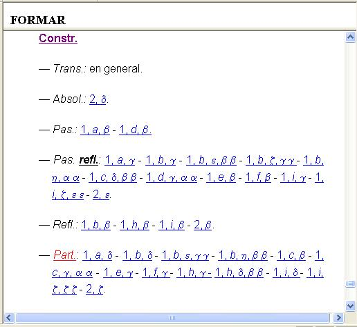
E) Conexión a la web de la editorial Herder y correo electrónico
El submenú "Conectar con la web de la editorial" del menú de Ayuda, permite enlazar con una página específica de la web de la Empresa Editorial Herder S.A., editora de este CD-ROM. En esta página se ofrecen informaciones relacionadas con la edición electrónica del DCR.
Evidentemente para que esta conexión se active es necesario que el usuario del DCR en versión CD-ROM tenga una conexión a Internet.
También pueden ponerse en contacto con la editorial a través de la dirección de correo electrónico siguiente: dcr@herder-sa.com
|
bien cerv. como con cuando del era esta este gran. |
las los más muy non para part. pero por que |
quien ser sin sus tan todo todos trans. una vida |
|
Las abreviaturas cerv., gran., part. y trans., que se excluyen de las búsquedas generales pueden buscarse a partir de las opciones de abreviaturas. |